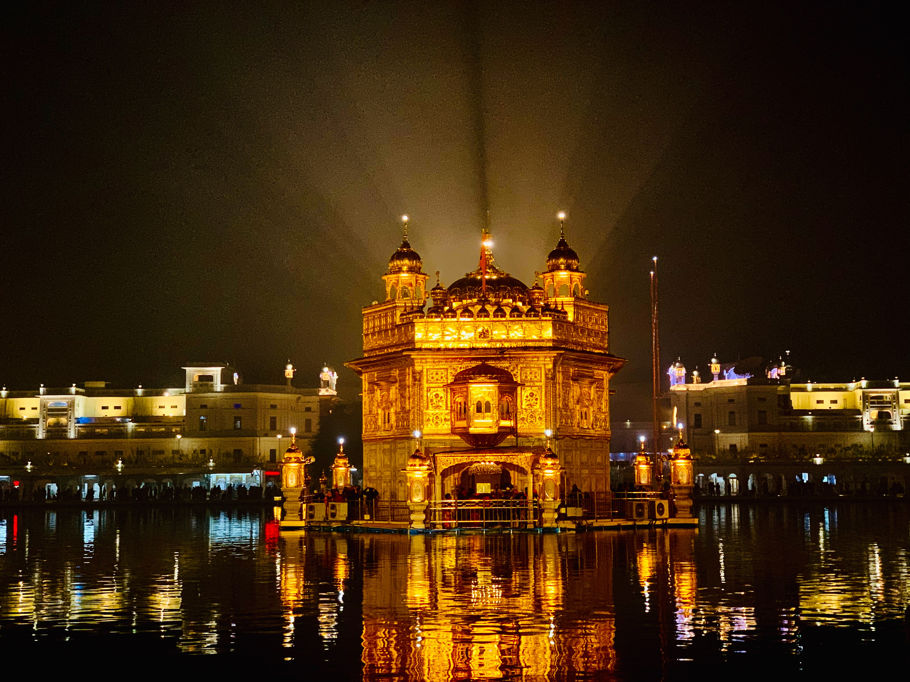
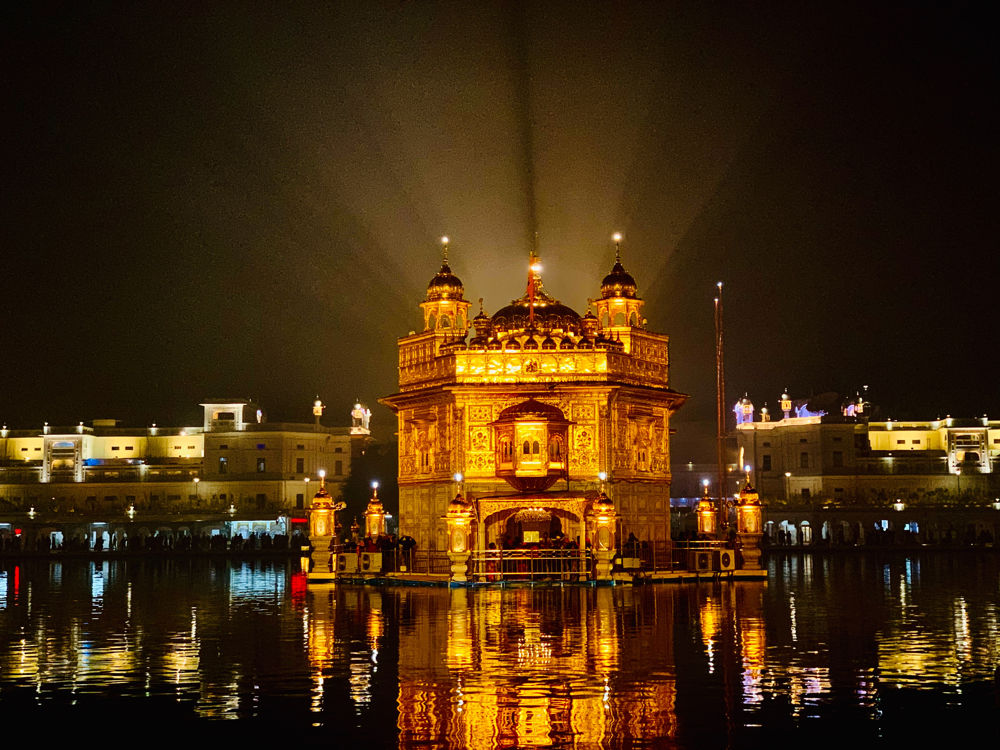

India is a rich cultural heritage, diverse geography, and historical landmarks, which attract tourists from all over the world.
Places for Exploring:
Some famous places are:
Agra
- Famous Place : Taj Mahal
- Location : Agra,Uttar Pradesh(India)
- Bulid between 1631 and 1648 by order of the Mughal emperor Shah Jahan in memory of his favourite wife
- It is the jewel of Muslim art in India and one of the universally admired masterpieces of the world's heritage.
Jaipur
- Location : Rajasthan (India)
- Exploring City Palace : Hawa Mahal, and Amber and Jaigarh forts
Rishikesh
- Location : Dehradun(India)
- The holy city of Rishikesh, in the base of the Himalayas, holds deep cultural and spiritual significance for local Hindus.
Amritsar
- Location : Amritsar(Punjabi,India)
- Famous Place : Golden Temple Amritsar
- It is not only a central religious place of the Sikhs, but also a symbol of human brotherhood and equality.
Photos


 
